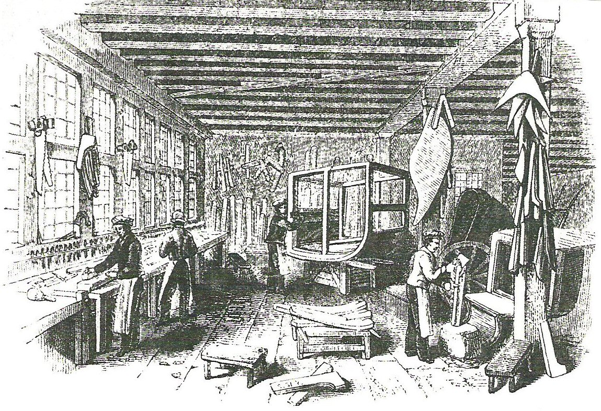
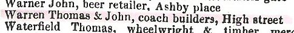
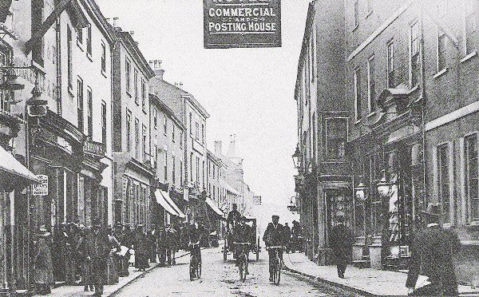
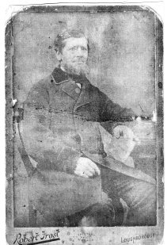
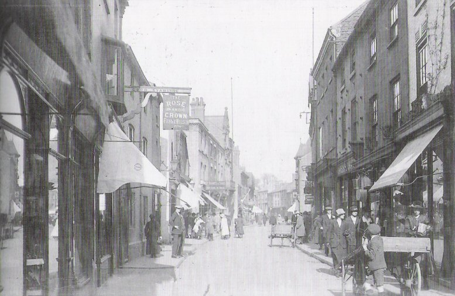
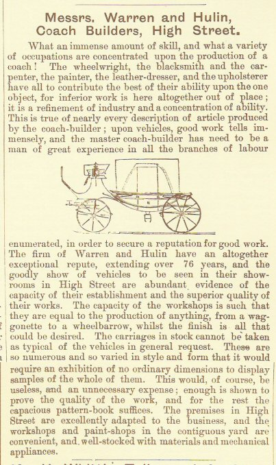
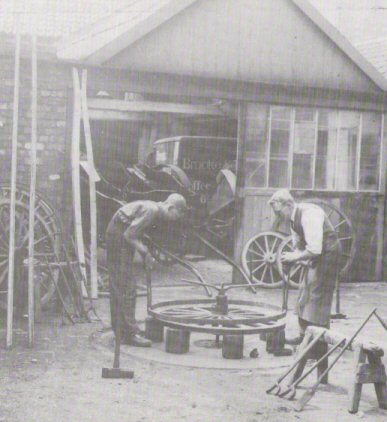
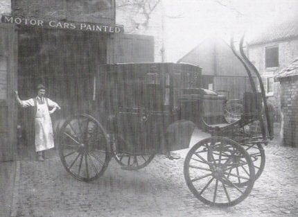
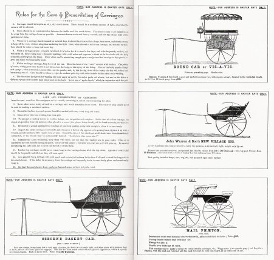
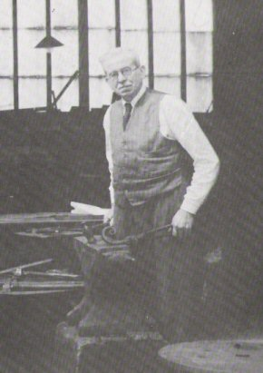

The Warren's and Coachbuilding in Loughborough

The Warren family was associated with coachbuilding in Loughborough for over a hundred years. John Warren (snr) first brought his business to the town from Ashby de la Zouch in about 1820 and worked his trade at his premises, at 29 1/2 High Street, for 20 years until his death in 1841.


From 1841 he was succeeded by his wife Alice and then his eldest sons Thomas and John, whilst other members of the family developed their skills in all aspects of the trade including coachmaking, coach painting and harness making, Thomas and John (jnr) worked side by side for a further 20 years until in the mid 1860's John Warren decided to go his own way and establish his own coachbuilding firm at 48 Baxter Gate.


The original High Street Coachmaking business continued under the guidance of Thomas Warren until the marriage of his son John to Lucy Hulin. This introduced Thomas to a partnership with Lucy's half brother Sydney Hulin and 'Warren and Hulin' was formed in the 1880's.

Thomas died in 1891 leaving his share to his son John. With John's death in 1904 the business passed to Sydney Hulin and the name of Warren was finally dropped.


Meanwhile the other firm of 'John Warren and Son' also became well established in the town passing from John Warren (jnr) at his death in 1891 to the eldest son of his second marriage John Bennett Warren.


Loughborough Trade Directories 1822–1916
| Source | Year | Name | Address | Trade | Notes |
|---|---|---|---|---|---|
| Directory | 1822 | John Warrin | High Street | Coachbuilder and painter | |
| Valuation of Loughborough | 1834 | J Warren | High Street | Valued £3–0–0 | |
| Directory | 1841 | John Warren | High Street | Coachbuilder and painter | |
| Directory (Pigot's) | 1841 | John Warren | High Street | Coachmaker | |
| Directory | 1842 | Thomas Warren | High Street | Coachmaker | |
| Directory | 1846 | Alice Warren | High Street | Coachbuilder | |
| Directory (Melville) | 1854 | Thomas and John Warren | High Street | Coachbuilders | |
| Directory (Post Office) | 1855 | Thomas and John Warren | High Street | Coachbuilders | |
| Directory (Drake) | 1861 | Thomas and John Warren | High Street | Coachbuilder | |
| Directory | 1862 | Thomas and John Warren | High Street | Coachmaker | |
| Directory (Buchan) | 1867 | John Warren | Baxter Gate | Coachbuilder | |
| Directory (Buchan) | 1867 | Thos Warren | High Street | Coachbuilder | |
| Directory (Post Office) | 1876 | John Warren and Son | Baxter Gate | Coachbuilders | |
| Directory (Post Office) | 1876 | Thomas Warren | High Street | Coachbuilder | |
| Directory (Bennett's) | 1888 | Warren and Hullin | 29½ High Street | Coachbuilder | |
| Directory (Bennett's) | 1888 | Warren and Son | Baxter Gate | Carriage Manufacturers | |
| Directory (Wright's) | 1892 | Warren and Hulin | 29½ High Street | Coachbuilders | |
| Directory (Wright's) | 1892 | J Warren and Son | 48 Baxter Gate | Coachbuilders | |
| Directory | 1896 | Warren and Son (John and Albert) | 48 Baxter Gate | Coachbuilder | |
| Directory (Wright's) | 1899 | Warren and Son (John and Albert) | 48 Baxter Gate | Coachbuilders | |
| Directory (Bennett's) | 1902 | Warren and Hulin | High Street | Carriage Builders | |
| Directory (Bennett's) | 1902 | J Warren and Son | Baxter Gate | Carriage Manufacturers | Carriages of every description built to order. Established 1815 |
| Directory | 1908 | John Warren and Son (Est. 1815) | 48 Baxter Gate | Coach and Motor Body Builders | Vans, floats and all descriptions of trade vehicles and motor car repairers and engineers. |
| Directory (Kelly's) | 1916 | John Warren and Son (Est. 1815) | 48 Baxter Gate | Coach and Motor Body Builders | Vans, floats and all descriptions of trade vehicles and motor car repairers and engineers. |
| Directory (Kelly's) | 1916 | Sydney Joseph Hulin | High Street | Carriage Builders |
The Warren family interest in coachbuilding and car bodies continued into the 20th Century. The original family firm becoming 'Warren and Hulin' and eventually 'Hulin's', after the death of Thomas Warren's son John in 1904. 'Hulin's' ceased to exist in about 1928.
'John Warren and Son' was still evident in 1916 but was eventually bought out by 'Dicken's' of Pinfold Gate, in the 1920's.
